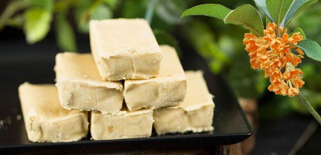

<haml>
<head>
<title>index</title>
</head>
<body>

<body background="image/000.jpg">

【桂花糕】這一款已有三百多年歷史的傳統中式點心，幾乎是各大古裝劇、歷史劇的「紅人」，<br>
可見其自始至終都極受歡迎。<p>

桂花糕以糯米粉、蜜桂花、糖為主要原料，造型多為方形和餅型，<br>
看似簡單，但各地根據口味喜好能夠創意出不同的做法和口味。<p>
	
 <p>

<a href="第2頁.html">連到第2頁</a>
<a href="第3頁.html">連到第3頁</a>
<a href="第4頁.html">連到第4頁</a>
<a href="心得.html">連到心得</a>

</body>
</html>